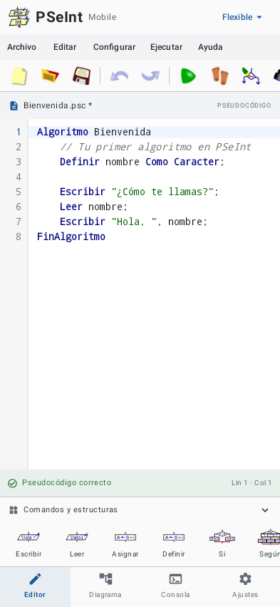

01 / EDITOR
Escribe sin perder el hilo
Resaltado de sintaxis, números de línea, búsqueda, sangría automática, deshacer y archivos .psc.
›_ Pseudocódigo para Android
Escribe, ejecuta y transforma tus algoritmos en diagramas desde el teléfono. PSeInt Mobile conserva la esencia del editor de escritorio y usa el motor original de PSeInt.
Algoritmo Bienvenida
// Tu primer algoritmo
Definir nombre Como Caracter
Escribir "¿Cómo te llamas?"
Leer nombre
Escribir "Hola, ", nombre
FinAlgoritmo
01 Todo lo que necesitas
Una herramienta completa para practicar lógica, resolver ejercicios y crear algoritmos desde cualquier lugar.
01 / EDITOR
Resaltado de sintaxis, números de línea, búsqueda, sangría automática, deshacer y archivos .psc.
02 / EJECUCIÓN
Ejecuta con el motor C++ original de PSeInt, responde entradas desde la consola y detecta errores en su línea.
03 / DIAGRAMAS
Explora diagramas clásicos y Nassi–Shneiderman, ajusta el zoom y exporta tu resultado a PNG.
Algoritmo sin_titulo2 Escribir "Hola"3FinAlgoritmo02 Pensado para quienes ya conocen PSeInt
Los perfiles, los comandos y las reglas de sintaxis se mantienen alineados con la versión de escritorio. Abre tus archivos, continúa tu práctica y guarda en formato .psc.
.psc con UTF-8, UTF-16 y Windows-125203 Mira cómo se siente
PSeInt Mobile
Versión 1.0 · AndroidEl archivo incluye el editor, los diagramas y el motor de ejecución. No necesitas crear una cuenta.
Descargar APK 27.1 MBToca el botón y espera a que termine la descarga.
Android te pedirá confirmar la instalación desde tu navegador o administrador de archivos.
El asistente inicial te ayudará a elegir el perfil y la apariencia.